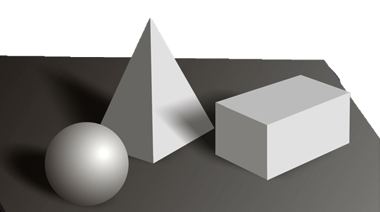

Уроки Pascal
На цій сторінці ви познайомитесь з модулем GRAPH.
Модуль Graph являє собою бібліотеку підпрограм, що забезпечує повне управління графічними режимами різних адаптерів дисплеїв: CGA, EGA, VGA і т.д..
Скачати_______________________________PascalABC
Беріть і поглиблюйте знання за допомогою наших уроків.
Після чого ви зможете попрактикувати себе у розділі "Завдання".Ця практика знадобиться для участі у конкурсі Перлинка(обов'язково перейдіть
за посиланням).Бажаю успіхів!
Скачати_______________________________FreePascal
Урок 1
Алгоритм роботи
1. Якщо ви вирішили включити графічні фрагменти в програму, то ви зобов'язані після назви програми про це заявити, використовуючи слово USES:
Program My_program; Uses Graph; ... |
2.Для роботи вам будуть потрібні дві робочі цілочисельні змінні, які необхідно описати: Var Grmode, Grdriver: integer; можна просто будь-які імена цих змінних, наприклад:
var A,B:integer;
|
Ці змінні задають драйвер (Grdriver) і режим (Grmode) відповідно до значень відповідними даному драйверу.
3. Після початку тіла програми, коли ви вирішили, що пора вже і підключитися до графічного модулю, необхідно: а) Вибрати режим автоматичної ідентифікації апаратури, тобто надати компілятору самому визначити значення змінної Grdriver, фразою:(дивитися в код нижче) б) ініціювати графічний пакет:(дивитися в код нижче)
Grdriver:= Detect; або А:=Detect; InitGraph( Grdriver, Grmode,’’); або InitGraph(a,b,’’); |
4. Очистимо екран, підготувавши його до роботи, процедурою: ClearDevice; не плутайте з ClrScr це в модулі CRT!
5. Пишемо саму програму з усіма графічними фокусами.
6. Затримка в кінці програми, щоб побачити, що ви навоялі. a) READLN; b) repeat until keypressed (Якщо підключений модуль CRT);
А тепер повний код:
uses graph;
var a,b:integer;
begin
a:=detect;
initgraph(a,b,'');
...
readln;
end.
|
Урок 2
Колір
Можна використовувати 16 кольорів, що може бути застосовано і в модулі CRT, тільки без мерехтіння символу:
0 Black чорний
1 Blue синій
2 Green зелений
3 Cyan блакитний
4 Red червоний
5 Magenta фіолетовий
6 Brown коричневий
7 LightGray світло-сірий
8 DarkGray темно-сірий
9 LightBlue світло-синій
10 LightGreen світло-зелений
11 LightCyan світло-блакитний
12 LightRed світло-червоний (рожевий)
13 LightMagenta світло-фіолетовий
14 Yellow жовтий
15 White білий
Бажано вибрати колір фону, на якому буде ваш малюнок і колір ліній, якими ви малюєте. Це все одно, що вибрати кольоровий аркуш паперу і колір олівця. Якщо ви цього не зробите, комп'ютер буде виконувати ваші команди, але тільки білим кольором.
Процедура SetColor(N) - допомагає вибрати колір лінії, олівця або колір контуру фігури. N -натуральне число від 0 до 15.
Процедура SetBKColor(N) - встановлює колір фону (Вибирає колір паперу, на якій будемо малювати).
Виводимо лінію на екран
Що б вивести лінію на екран потрібно знати, де вона починається на екрані і де закінчується, тобто координати початку (x, y) і кінця (X1, y1) майбутньої лінії.
Line(x, y, x1,y1); SetLineStyle(N,0,K); |
Але, бажано, перед цим вказати колір вашої лінії і можна навіть
стиль лінії. Як вказати колір Ви вже в курсі, а от стиль допоможе вибрати процедура SetLineStyle. SetLineStyle (N, 0, K);
де N стиль лінії
0 суцільна
1 .............. пунктирна
2 штрих-пунктирна
3 _ _ _ _ _ _ штриховая
К - товщина лінії 1 або 3
Виводимо прямокутник
Якщо взяти кольоровий дріт і зігнути її в вигляді прямокутника, то вийде контур прямокутника. Можна взяти і кольоровий олівець і намалювати контур прямокутника, колір контуру відповідає кольору взятого олівця. Але можна взяти і кольоровий аркуш паперу і вирізати з нього кольоровий прямокутник, або пензликом, мокнув в фарбу, намалювати, наприклад, жовтенький прямокутник. У цих прямокутників контуру немає! Отримали два види прямокутників: з контуром і без контуру.
Процедура Rectangle малює контур прямокутника. Для відновлення прямокутника досить знати координати будь-якої діагоналі.
Rectangle(x,y,x1,y1); Bar(x,y,x1,y1); |

Процедура BAR малює заповнений прямокутник без контуру. Перед виконанням даної процедури бажано вибрати колір і стиль контуру.
Стиль і колір заповнення задаються заздалегідь процедурами SetFillStyle, SetFillPattern.
Урок 3
Коло, еліпс, дуги
Багато не намалюєш тільки з ліній і прямокутників, хочеться закруглити деякі штрихи. Будемо вчитися малювати більш складні фігури з кіл, еліпсів і дуг. Почнемо з кіл. Наприклад, ви хочете намалювати сонце. Потрібно взяти "інструмент" для малювання кіл - циркуль, вибрати місце на екрані, де буде сонце, тобто координати центру кола або куди Ви б поставили голку циркуля, і звичайно, підібрати розміри Вашого сонечка - радіус кола або відстань між ніжками циркуля.
Ясно, що циркулем на екрані малювати нерозумно, тому роль "інструмента" буде виконувати процедура CIRCLE (майже -що циркуль).
де (х, у) - координати центру кола; R - радіус.
Circle(x, y, R); |
Якщо ж ви хочете намалювати повітряну кульку, то її форма буде більше нагадувати овал, еліпс. Ви, звичайно, згодні з тим, що знову вам необхідно знати координати центру кульки і ще його розміри від центру в двох напрямках - по ширині і по довжині. "Інструментом" стане вже інша процедура ELLIPSE і крім тих даних, про які ми говорили, додадуться нові - застосування яких більш ясно стане трохи пізніше.
Ellipse(x, y, 0, 360, Rx, Ry); |
где (х,у) - координаты цента; Rx - расстояние от центра до контура по оси Х, Ry- расстояние от центра до контура по оси Y; после координат центра будут стоять два числа, соответствующие началу и концу дуги контура, т.к. у нас эллипс не имеет ни того ни другого, то поставим числа 0 и 360.
Залишилося розібратися c малюванням дуг, адже більшість малюнків складаються саме з дуг. Дуги можуть бути частиною окружності і частиною еліпса. "Інструментом" виконує малювання дуги від окружності є процедура ARC і від еліпса процедура вже знайома Ellipse.У Турбо Паскалі малювання кіл, еліпсів і дуг відбувається проти годинникової стрілки - це необхідно твердо пам'ятати для визначення початку і кінця дуги!
Ellipse(x,y, нач_дуги, кон_дуги, Rx, Ry); |
Заповнення контуру
Ми заговорили про заповнення, але як це робиться?
Для того, щоб зафарбувати який-небудь контур необхідно:
1) вибрати стиль і колір заливки контуру,
використовуючи процедуру SetFillStyle (N, колір)
де N стиль заповнення
0 кольором фону
1 заданим кольором
2 в горизонтальну смужку
3 //////// тонка
4 //////// жирна
5 \\\\\\\ жирна
6 \\\\\\\ тонка
7 в клітку
8 в похилу клітку
9 в густу похилу клітку
10 рідко розташовані точки
11 часто розташовані точки
12 призначений для користувача стиль
2) а потім "залити" даний контур процедурою FloodFill(x, y, цвет_контура) де (х, у) будь-яка точка належить контуру, причому контур не повинен мати точок розриву і має складатися з ліній або дуг одного кольору
SetFillStyle(N, колір); FloodFill(x, y, цвет_контура); |
Урок 4
Виведення тексту на екран
Виконуючи різноманітні малюнки, вам також знадобиться і виводити різні написи під ними або просто супроводжуючий до них текст. Розумничка Турбо Паскаль, і тут він на висоті, про все подумав!Процедура OutText виводить текст в поточну позицію, а процедура OutTextXY в конкретне місце графічного екрану з точністю до точки!
OutText(‘ Ваш_текст’); OutTextXY(x,y,’Ваш_текст’); |
Виводити текст звичайним шрифтом не цікаво! Дуже хочеться чогось незвичайного! Ефектного! Будь ласка, вам надає Паскаль право вибрати не тільки шрифт, а й розмір
букв. Процедура SetTextStyle надає нам можливість вибрати шрифт, положення виведення тексту на екрані (горизонтально, вертикально або горизонтально з вертикальним
поворотом кожної літери) і розмір.
SetTextStyle (номер_шр, положення, увеліченіе_шріфта)
номер шрифту може бути:
0 - матричний шрифт 8х8 (Binary);
1 - звичайний напівжирний шрифт (Triplex);
2 - тонкий шрифт (Small);
3 рубаний шрифт (SansSerif);
4-готичний шрифт (Gothic);
Положення тексту:
0 - горизонтальний звичайний висновок "текст";
1 -вертикальний висновок від низу до верху;
2 - горизонтальний висновок, але кожна буква повернута на 90 градусів
Збільшення шрифту:
для 0 від 1 до 31; для 1 - не діє;
для інших аналогічно 0.
Без підключення шрифтів можна працювати з номерами 0 і 1,
всі інші повинні бути підключені.
Завдання
Завдання
Ось вам малюнки на опрацювання. Структуру роботи (перед тим, як писати саму програму) на сторінці "Конкурс Перлинка". Дивіться міні інструкцію під назвою "Вказівка". Там же знаходяться й інші завдання.
Впевнений у собі? Тоді переходь на сторінку "Перевір себе".
Дізнайся, як гарно ті засвойв матеріал.